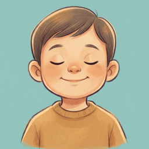

Le retour au calme, en un geste.
Brizz aide les enfants de 3 à 10 ans à retrouver le calme en un geste, seuls ou avec un adulte à côté. Un enfant en crise appuie sur un bouton unique ; l'application tire une technique d'apaisement parmi celles qu'un parent a laissées actives, et lance immédiatement une animation lente en plein écran.
Sans compte, sans publicité, sans donnée collectée. Tout se passe sur l'appareil.
Brizz helps children aged 3 to 10 find calm again with a single tap, alone or with an adult nearby. A child in distress presses one button; the app picks a calming technique among the ones a parent has enabled, and starts a slow, full-screen animation right away.
No account, no ads, no data collected. Everything runs on the device.